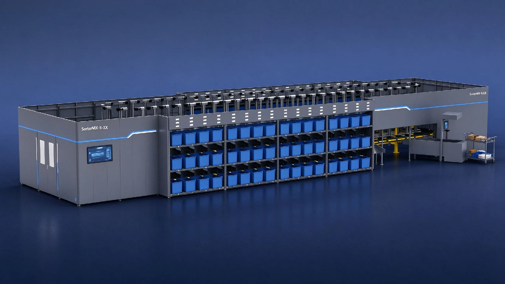
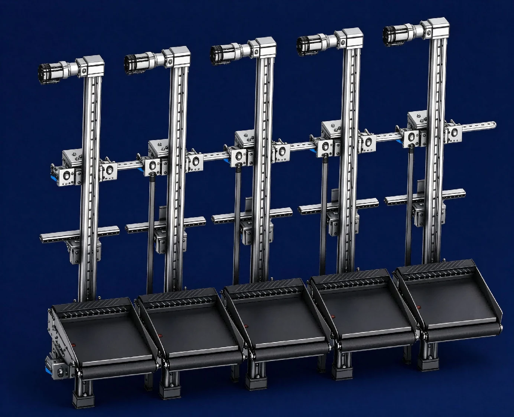
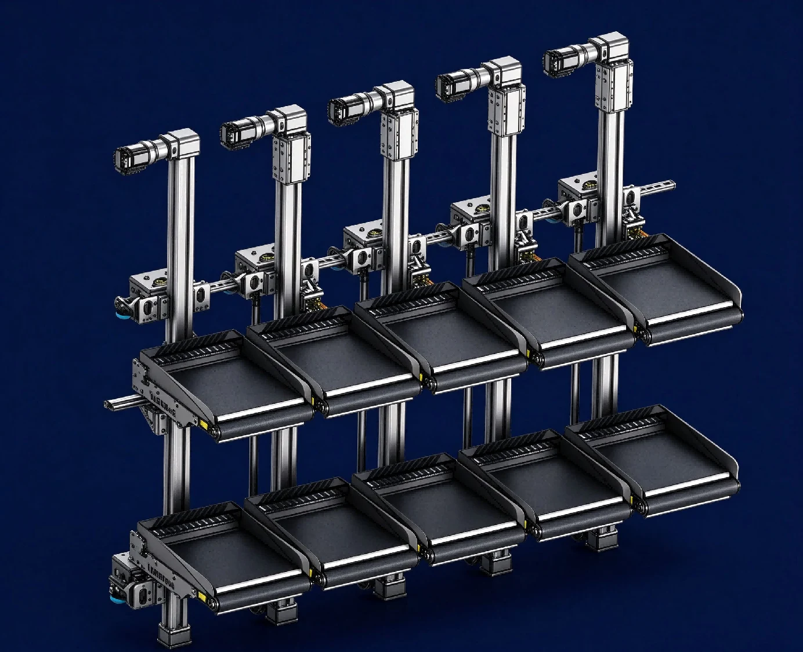

产品特点
五款机型的处理能力与载具配置
S系列每根立柱搭载一台载具，D系列搭载两台。单区域最大分拣能力因机型而异，为每小时7,200至17,280件。
半自动、直角及手动供件方式
S01、D01采用半自动供件，S02、D02采用直角供件，S03采用手动供件，可根据运营流程选择机型。
支持0.1至10 kg货物及三种载具规格
全机型均支持0.1至10 kg货物，可根据货物特性选择标准型、带横杆型或带侧护栏型载具。
伺服驱动与DC48V供电
升降采用一体式伺服电机，分拣采用伺服电动滚筒。支持DC48V接触式或非接触式供电，以及红外或泄漏同轴电缆通信。
规格与选型条件
| 单区最大分拣能力 | S01：8,640／S02、S03：7,200／D01：17,280／D02：14,400件/小时 |
|---|---|
| 适用重量 | 0.1〜10 kg |
| 小车结构 | S：每根立柱搭载一台载具 / D：每根立柱搭载两台载具 |
实际处理能力因货物尺寸、重量、投入条件、分拣目的地数量、产线配置等运行条件而异。
Omakase-kun｜S、D系列型号与规格
按处理能力与投入方式选择的五款机型
半自动投入方式适合底面稳定的中小型货物，直角投入方式适应多种货物形态。
载具可选择标准型、带横杆型及带侧护栏型三种规格，也可根据货物特性定制规格。


| 项目 | S01 | S02 | S03 |
|---|---|---|---|
| 小车结构 | 每根立柱搭载一台载具 | 每根立柱搭载一台载具 | 每根立柱搭载一台载具 |
| 供包方式 | 半自动供包 | 直角供包 | 手动供包 |
| 单区最大分拣能力 | 8,640件/小时 建议速度：1.2 m/s | 7,200件/小时 | 7,200件/小时 |
| 最大运行速度 | 1.5 m/s | 1.0 m/s | 1.0 m/s |
| 适用重量 | 0.1〜10 kg | 0.1〜10 kg | 0.1〜10 kg |
| 最小货物尺寸 | 100 × 100 × 20 mm | 50 × 50 × 5 mm | 50 × 50 × 5 mm |
| 最大货物尺寸 | 450 × 320 × 200 mm ※ | 450 × 320 × 200 mm ※ | 450 × 320 × 200 mm ※ |
| 小车节距 | 500 mm | 500 mm | 500 mm |
| 小车尺寸 | 430 × 700 mm | 430 × 700 mm | 430 × 700 mm |
| 噪声水平 | 不超过72 dB | 不超过72 dB | 不超过72 dB |
| 项目 | D01 | D02 |
|---|---|---|
| 小车结构 | 每根立柱搭载两台载具 | 每根立柱搭载两台载具 |
| 供包方式 | 半自动供包 | 直角供包 |
| 单区最大分拣能力 | 17,280件/小时 建议速度：1.2 m/s | 14,400件/小时 |
| 最大运行速度 | 1.5 m/s | 1.0 m/s |
| 适用重量 | 0.1〜10 kg | 0.1〜10 kg |
| 最小货物尺寸 | 100 × 100 × 20 mm | 50 × 50 × 5 mm |
| 最大货物尺寸 | 450 × 320 × 200 mm ※ | 450 × 320 × 200 mm ※ |
| 小车节距 | 500 mm | 500 mm |
| 小车尺寸 | 430 × 700 mm | 430 × 700 mm |
| 噪声水平 | 不超过72 dB | 不超过72 dB |
※ 最大货物高度与格口层数有关，实际尺寸和布局按现场条件设计。处理能力为单区最大值，S01、D01建议运行速度为1.2 m/s。
驱动与控制
升降行程为1,900／2,900 mm。采用一体式伺服电机升降、伺服电动滚筒分拣，支持DC48V滑触线或非接触供电，以及红外通信或漏波电缆。
导入前需确认的事项
请告知货物最小及最大尺寸与重量、所需处理量、格口数量、安装空间、电源、温度范围及既有设备接驳条件；维护范围和安装工序也将逐项确认。
咨询规格与报价